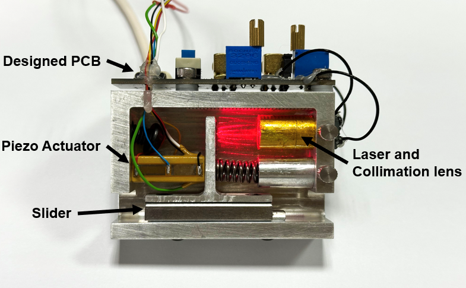

ABOUT
Ma Weilin is a maker and holds a Master’s degree in Electronic Information from the University of Chinese Academy of Sciences (UCAS). He is currently a PhD student in Physics at the Hong Kong University of Science and Technology (HKUST). His research focuses on the development of low-cost scientific instrumentation. Representative projects include OpenSTM and a micro-profilometer. During his PhD studies, he is working on the prototyping of Superconducting Charge Qubit Microscopy (SCQM) under the supervision of Prof. Berthold Jaeck.
Research interests: Quantum Sensing, Scanning Probe Microscopy, Low-Cost Alternative Scientific Instrumentation
EDUCATION
-
 Hong Kong University of Science and Technology
2025 — Present
Hong Kong University of Science and Technology
2025 — Present
Ph.D. in Physics
-
University of Chinese Academy of Sciences 2022 — 2025
M.Sc. in Electronic Information
-
 Wuyi University
2018 — 2022
Wuyi University
2018 — 2022
B.S. in Electronic Information Engineering
PUBLICATIONS
-
Enhanced performance of self-mixing interferometry for piezoelectric material displacement measurement using the data fusion methodMeasruement, 2025
-
Open STM: A low-cost scanning tunneling microscope with a fast approach methodHardwareX, 2023
PROJECTS


Tip: thumbnails work best if you use landscape screenshots (e.g., 1200×800). You can click any image to open it in a new tab.
BLOG
I write research notes and project retrospectives here: Visit my blog